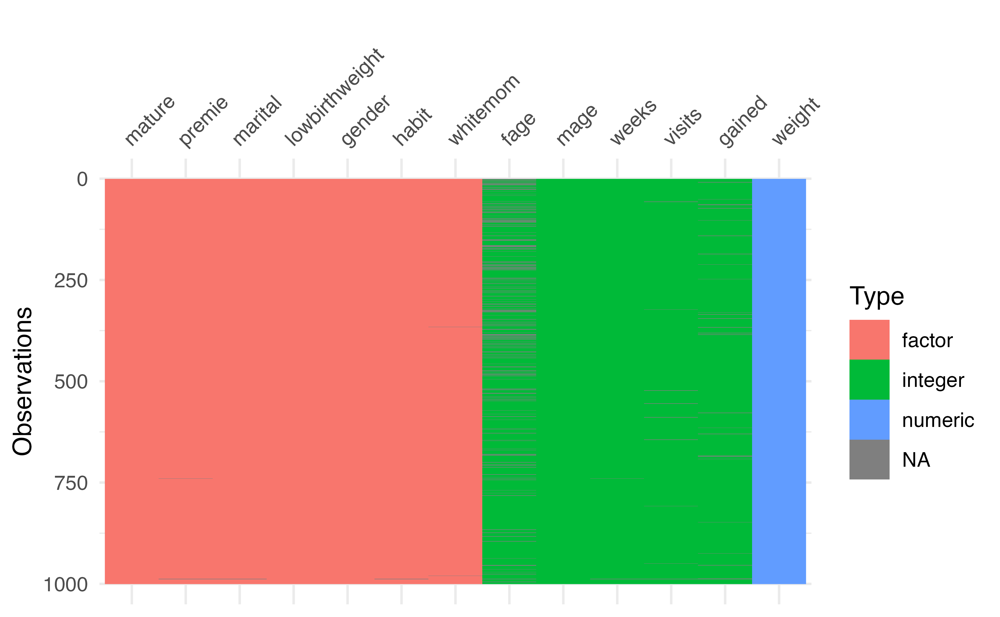
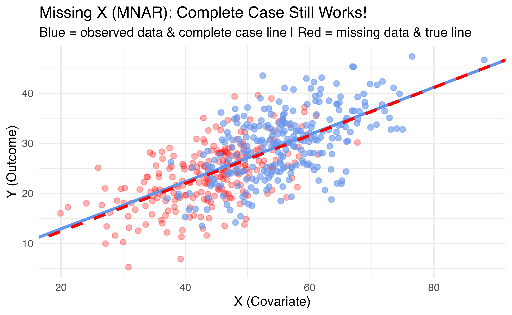
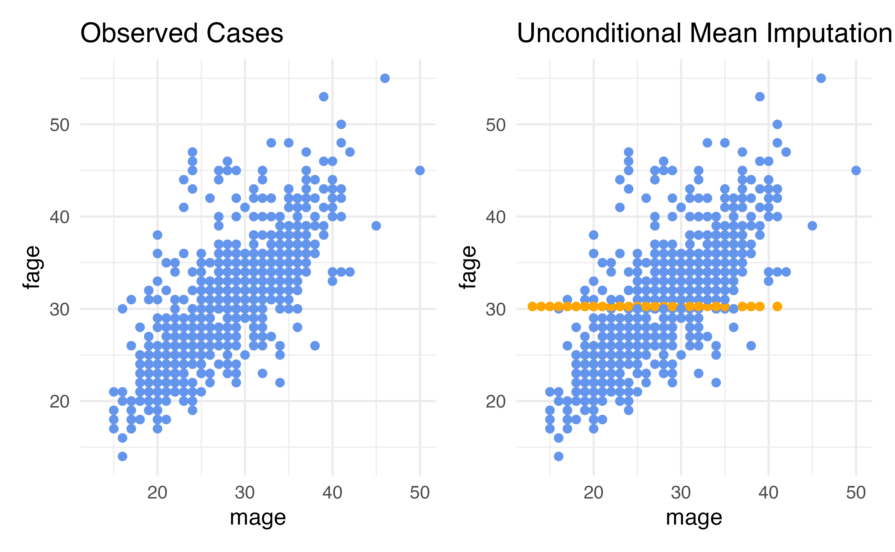
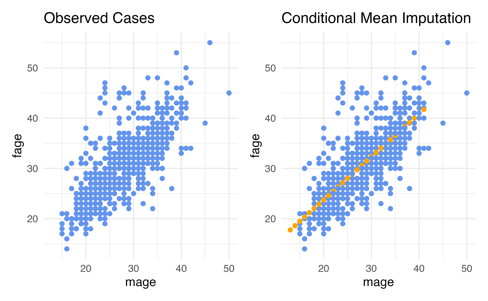
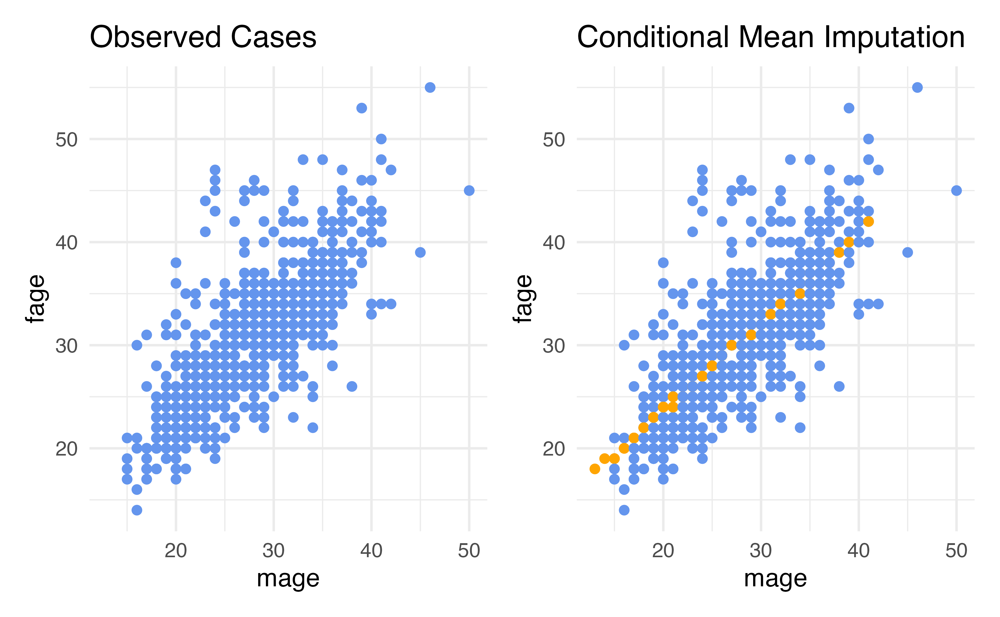

Missing Data
The Data
fage: father’s age in years.mage: mother’s age in years.mature: maturity status of mother.weeks: length of pregnancy in weeks.premie: whether the birth was classified as premature (premie) or full-term.visits: number of hospital visits during pregnancy.marital: whether mother is married or not married at time of birth.gained: weight gained by mother during pregnancy in lbs.weight: weight of the baby at birth in pounds.lowbirthweight: whether baby was classified as low birthweight (low) or not (not low).gender: biological sex of the baby, limited to f or m.habit: status of the mother as a nonsmoker or a smoker.whitemom: whether mom identifies as white or not white.
Missing data exploratory analysis
- The
visdatpackage is a great way to visualize key information about your dataset - Use the function
vis_dat()on your dataframe to see the column types and explore missingness- This is especially useful for large datasets
- Use the
vis_miss()function to learn more about the missing data
vis_dat()

Which column has the most missing data?
vis_miss()
Types of Missingness
Mechanisms of Missingness
There are three classical definitions:
- MCAR: Missing Completely at Random
- The probability of being missing is the same for all observations
- Example: Data lost due to random equipment failure
Mechanisms of Missingness
There are three classical definitions:
- MAR: Missing at Random
- The probability of being missing depends only on observed data
- Example: Older fathers are less likely to report their age, but conditional on mother’s age, missingness is random
Mechanisms of Missingness
There are three classical definitions:
- MNAR: Missing Not at Random
- The probability of being missing depends on unobserved data (the missing values themselves)
- Example: Very young fathers are less likely to report their age because they are young
A More Useful Framework
Rather than MCAR/MAR/MNAR, it’s more practical to think about:
- Ignorable missingness: We can safely ignore the missing data mechanism in our analysis
- Non-ignorable missingness: We must account for the missing data mechanism
The key question: Is the outcome (Y) or a covariate (X) missing?
When Y is Missing
If your outcome variable is missing:
- MAR or MNAR → Non-ignorable
- Complete case analysis can give biased results
- Need careful consideration and possibly imputation
- MCAR → Ignorable
- Complete case analysis is unbiased (but inefficient)
- This is a very strong assumption
Bottom line: Missing outcomes are usually problematic and require careful handling
When X is Missing
If your covariate (predictor) is missing:
- Pretty much always ignorable!
- Even if MNAR, complete case analysis is typically unbiased
- This might seem surprising, but there’s a good reason…
Visualizing Why Missing X is Ignorable

Even though low X values are systematically missing (MNAR), the slope estimate from complete cases (blue) matches the true relationship (red dashed)
What do we do?
There are three typical approaches:
- Complete Case Analysis
- Available Case Analysis
- Imputation
Which to use depends on whether Y or X is missing!
Complete Case Analysis
Complete Case Analysis
- This is probably what you have done most often
- This means we eliminate all rows in the dataset that contain any missing data
- The only rows we use are the complete rows, with no missing data
Complete Case Analysis
Advantage: It is easy!
- The first step is to create a dataset that only includes rows that are fully observed
NOTE It is important that you hold on to the original data somewhere when doing complete case analysis, we may need to go back and look at the rows we dropped.
Complete case analysis
When doing complete cases analysis, it is important to always note how many observations are dropped.
- Here we are dropping 200 rows, losing 20% of the data
When to Use Complete Case Analysis
Use complete case analysis when:
- Only covariates (X) are missing
- This is ignorable regardless of mechanism (MCAR/MAR/MNAR)!
- You lose efficiency but not validity
When to Use Complete Case Analysis
Be cautious when:
- The outcome (Y) is missing
- Only safe if MCAR (very strong assumption)
- Otherwise likely biased
Disadvantages of Complete Case Analysis
What issues might there be with simply deleting 20% of your sample?
- We reduce our sample size (loss of efficiency)
- If Y is missing and not MCAR: biased estimates
Disadvantages of Complete Case Analysis
What issues might there be with simply deleting 20% of your sample?
- We could lose the representative nature of our data
- What if the data is missing for a reason?
- What if a particular group of people refused to answer a question, so by conducting a complete case analysis we completely remove that group of people from the data set?
Available Case Analysis
Available Case Analysis
- Suppose there are 30 variables, but we only need to use 25 in our analysis
- Available case analysis means we ignore any missing data in the 5 variables we don’t plan to use and eliminate all rows with missing data in our desired 25 variables
Available Case Analysis
Advantages: Same as complete case analysis (fast and easy!)
Disadvantages: Same as complete case analysis, with one important note:
- Safe if only the predictors (X) we’re using are missing
- Problematic if the outcome (Y) is missing and not MCAR
Available Case Analysis
When to Consider Imputation
Imputation becomes important when:
- The outcome (Y) is missing (and not MCAR)
- You want to preserve sample size/power
- Multiple variables have missingness
- You’re doing more complex analyses
For our examples: We’ll focus on imputing missing covariates (X), which is the most common scenario in practice.
Imputation Models Must Be Congenial
Congeniality: A Critical Concept
When imputing missing data, your imputation model must be congenial with your analysis model.
Congeniality means: The imputation model must include at least all the variables in your analysis model (and ideally more!)
Why is this important?
What Happens with Uncongenial Models?
Suppose your analysis model is: \(\text{lowbirthweight} \sim \text{fage} + \text{mage} + \text{habit}\)
But you impute fage using only: \(\text{fage} \sim \text{mage}\)
Problem: You’ve ignored the relationship between fage and habit!
- Your imputed values won’t reflect how father’s age relates to smoking habits
- This can bias your final analysis results
- The more important
habitis, the worse the bias
Congenial Imputation: Best Practices
Your imputation model should include:
- All variables in your analysis model (predictors + outcome)
- Additional auxiliary variables that might help predict missingness
- Variables related to the missing data mechanism
Example: If analyzing lowbirthweight ~ fage + mage + habit, impute fage using:
Note: We include the outcome (lowbirthweight) in the imputation model!
Why Include the Outcome in Imputation?
This might seem counterintuitive, but you should include Y when imputing X:
- The relationship between X and Y should be preserved in imputed values
- Leaving out Y can attenuate (weaken) the relationship in your analysis
- This is called “uncongenial imputation” and leads to bias
Rule of thumb: Your imputation model should be more inclusive than your analysis model, never less.
Practical Implementation
Good approach (congenial):
Bad approach (uncongenial):
Imputation
Imputation
To impute all the missing values in this data set, we are going to:
- Estimate values for all the missing values in the original data set
- Fill in the missing data with these estimates. This is called completing the data
- End up with a data set that has the same dimensions as the original
ncdata set, but with no missing data - Proceed with our modeling
Getting started
There are a lot of techniques we can use for imputation.
- The hardest step in this process is deciding which technique might be appropriate
- We are going to explore a few commonly used techniques, and discuss the pros and cons of each
fage: Father’s Age
- Let’s look at one variable with a lot of missing data:
fage(a covariate) - There are 171 rows that are missing this variable
- For example, here is row 1:
fage: Father’s Age
- Let’s look at one variable with a lot of missing data:
fage(a covariate) - There are 171 rows that are missing this variable
- For example, here is row 1:
# A tibble: 1 × 13
fage mage mature weeks premie visits marital gained weight lowbirthweight
<int> <int> <fct> <int> <fct> <int> <fct> <int> <dbl> <fct>
1 NA 13 younger … 39 full … 10 married 38 7.63 not low
# ℹ 3 more variables: gender <fct>, habit <fct>, whitemom <fct>- We need to decide how to impute (estimate the missing values) for father’s age
Technique 1: Unconditional Mean Imputation
- One of the simplest techniques for imputing such values is called unconditional mean imputation, or UMI
- This imputation technique involves filling in missing values by looking at all rows that have observed information for the variable of interest, and computing the mean of that variable
- We then impute all rows that are missing the variable by plugging in the mean
- The idea behind this technique is that if we don’t know what a missing data value should be, it may be reasonable to just plug in the average value
Technique 1: Unconditional Mean Imputation
For our variable of interest, fage, we can conduct unconditional mean imputation (UMI) by:
- taking all of the data point for which fage is observed
- computing the mean and
- replacing all missing fage values with this mean
- This will yield a data set that is completed, i.e., has no missing data, in
fage
Technique 1: Unconditional Mean Imputation
Technique 1: Unconditional Mean Imputation
Behind the scenes (in practice you don’t need the code below, just showing what the recipe is doing)
# A tibble: 1 × 1
mean_fage
<dbl>
1 30.3nc_mean_impute <- nc |>
mutate(
imputed = is.na(fage),
fage = case_when(
imputed ~ 30.25573,
TRUE ~ as.numeric(fage)
))
nc_mean_impute %>%
slice(1)# A tibble: 1 × 14
fage mage mature weeks premie visits marital gained weight lowbirthweight
<dbl> <int> <fct> <int> <fct> <int> <fct> <int> <dbl> <fct>
1 30.3 13 younger … 39 full … 10 married 38 7.63 not low
# ℹ 4 more variables: gender <fct>, habit <fct>, whitemom <fct>, imputed <lgl>Checking our imputations
Once we have completed an imputation process, our next step is ALWAYS to check:
- To make sure we actually filled in all the missing values and
- To check to see how these imputations compare to the observed data
- Did we impute something completely ridiculous, or something that looks reasonable?
Checking our imputations
Checking our impuations
- Why didn’t the mean change?
- How was the standard deviation different?
Considerations: Unconditional Mean Imputation
- Our imputed values were all at the mean
- This means that we put additional rows exactly 0 standard deviations from the mean
- Standard deviation describes how much we’d expect an average data point to vary from the mean
- Our mean-imputed data set will have a smaller standard deviation than the observed data (more rows are actually exactly at the mean – we did that! so the average distance from the mean is smaller)
- Therefore, unconditional mean imputation generally underestimates the variability in the data
Considerations: Unconditional Mean Imputation

Disadvantages: Unconditional Mean Imputation
- Our imputations do not reflect the relationship in the data that exists between
fageandmage - This is because we did not include this relationship as part of our imputation strategy!
- UMI considers only the marginal distribution of the variable being imputed
- It completely ignores the fact that values of
fagemight be related to another variable present in the data set - As a result, using unconditional mean imputation often results in a distortion of conditional distributions in the data
Considerations for Unconditional Mean Imputation
- Pros: It is fast and easy to compute, you can use all observed data
- Cons:
- It underestimates the variability in the data
- It often distorts conditional distributions in the data
- It relies on the data being missing completely at random
Conditional Mean Imputation
Conditional Mean Imputation
- Rather than computing the marginal mean and putting that in for our missing values, we could calculate a conditional mean, a mean that conditions on our other variables
- How do we calculate conditional means?
- Linear regression is the simplest way!
Conditional Mean Imputation
Conditional Mean Imputation
Behind the scenes (in practice you don’t need the code below, just showing what the recipe is doing)
nc_cmean_impute <- fit(linear_reg(),
fage ~ mage,
data = nc) |>
predict(new_data = nc) |>
bind_cols(nc) |>
mutate(
imputed = is.na(fage),
fage = case_when(
imputed ~ .pred,
TRUE ~ as.numeric(fage)
))
nc_cmean_impute# A tibble: 1,000 × 15
.pred fage mage mature weeks premie visits marital gained weight
<dbl> <dbl> <int> <fct> <int> <fct> <int> <fct> <int> <dbl>
1 17.8 17.8 13 younger mom 39 full term 10 married 38 7.63
2 18.6 18.6 14 younger mom 42 full term 15 married 20 7.88
3 19.5 19 15 younger mom 37 full term 11 married 38 6.63
4 19.5 21 15 younger mom 41 full term 6 married 34 8
5 19.5 19.5 15 younger mom 39 full term 9 married 27 6.38
6 19.5 19.5 15 younger mom 38 full term 19 married 22 5.38
7 19.5 18 15 younger mom 37 full term 12 married 76 8.44
8 19.5 17 15 younger mom 35 premie 5 married 15 4.69
9 20.3 20.3 16 younger mom 38 full term 9 married NA 8.81
10 20.3 20 16 younger mom 37 full term 13 married 52 6.94
# ℹ 990 more rows
# ℹ 5 more variables: lowbirthweight <fct>, gender <fct>, habit <fct>,
# whitemom <fct>, imputed <lgl>Conditional Mean Imputation

Summary statistics
What if we want to include more variables?
- What if we think
fageis actually conditional on more than justmage?
What if we want to include more variables?
- What if we think
fageis actually conditional on more than justmage?
Conditional Mean Imputation

Conditional Mean Imputation
- The
tidymodelsdefault is to try to impute values using all other predictors - The problem is in order to use this method, the values must not be missing for the other predictors (which is often not the case!)
- Let’s see how this errors
Conditional Mean Imputation
recipe_nc <- recipe(lowbirthweight ~ ., data = nc) |>
step_impute_linear(fage, impute_with = imp_vars(all_predictors()))
wf <- workflow() |>
add_recipe(recipe_nc) |>
add_model(logistic_reg())
fit(wf, data = nc)Warning: There were missing values in the predictor(s) used to impute; imputation did
not occur.Warning: glm.fit: algorithm did not convergeWarning: glm.fit: fitted probabilities numerically 0 or 1 occurred══ Workflow [trained] ══════════════════════════════════════════════════════════
Preprocessor: Recipe
Model: logistic_reg()
── Preprocessor ────────────────────────────────────────────────────────────────
1 Recipe Step
• step_impute_linear()
── Model ───────────────────────────────────────────────────────────────────────
Call: stats::glm(formula = ..y ~ ., family = stats::binomial, data = data)
Coefficients:
(Intercept) fage mage matureyounger mom
-1499.5824 -2.1897 5.1293 44.8299
weeks premiepremie visits maritalnot married
5.4982 15.0877 -2.6857 2.3088
gained weight gendermale habitsmoker
-0.3773 221.9656 -6.9561 -12.8116
whitemomwhite
-11.0732
Degrees of Freedom: 799 Total (i.e. Null); 787 Residual
(200 observations deleted due to missingness)
Null Deviance: 493.3
Residual Deviance: 7.287e-07 AIC: 26Advantages: Conditional Mean (Regression) Imputation
- Our data can be conditionally missing at random – this means that the missingness only needs to be random conditional on the variables that we have included in our imputation model
- The variability is closer to what it should be compared to just mean imputation
Disadvantages: Regression Imputation
- We need to specify the conditional relationships
- So far, we’ve only talked about linear regression, meaning this method only works for continuous variables (it turns out you can use logistic for categorical variables, but then you need to specify a separate imputation method for each type of variable, this can be a lot depending on the size of your data!)
- The other variables we use for imputation need to not be missing
Conditional Imputation: KNN
- We can use another approach that is more flexible and more forgiving to missing data in the other predictors: K-Nearest-Neighbor
- The steps:
- Using all predictors requested, calculate distances between observations (this uses a method called “Gower’s distance” which can be used for both continuous and categorical data YAY)
- Determine “nearest neighbors”, that is other observations that are the closest to you in terms of distance calculated in (1)
- The mode of the nearest neighbors will be filled in for categorical variables and the mean will be filled in for continuous
Conditional Imputation: KNN
Conditional Imputation: KNN

Checking summary statistics
Advantages: Conditional Imputation: KNN
- Our data can be conditionally missing at random – this means that the missingness only needs to be random conditional on the variables that we have included in our imputation model
- The variability is closer to what it should be compared to just mean imputation
- The method allows for either continuous or categorical variables to be imputed using the same technique
- The other variables we are using can be missing as long as they are not mostly missing within each of the K neighbors that end up being chosen (for small percentages of missingness this is reasonable)
Disadvantages: KNN Imputation
- We need to specify the conditional relationships (can default to all predictors, though)
- Doesn’t account for the full potential variability (we need more advanced techniques like multiple imputation for that)
Summary: Choosing a Method
If only covariates (X) are missing: * Complete/available case analysis is valid (just less efficient) * Imputation can improve efficiency and precision
If the outcome (Y) is missing: * Complete case only valid if MCAR (strong assumption) * Usually need imputation or other careful methods
For imputation: * Unconditional mean: Fast but distorts relationships * Conditional methods (regression, KNN): Better preserve relationships * KNN: Most flexible for mixed data types
Advanced techniques
- Chained imputation
- Multiple imputation
- Multivariate Imputations by Chained Equations (MICE)
micepackage in R is a nice one for this

Dr. Lucy D’Agostino McGowan adapted from Nicole Dalzell’s slides